Gamma correction is the act of compensating the encoded gamma curve so you can display the content properly on your television, monitor or projector. When it comes to computers, generally speaking by default you should assume the sRGB colourspace unless the content itself explicitly tells you otherwise. sRGB is the standard colourspace on consumer monitors and the web, it gives more quantisation steps to the darker tones because the human visual system is more capable of perceiving slightly differences to dark shades of gray than it is to bright shades of gray.
This is the exact same thing we do in telecommunication systems, where we encode audio in a non-linear way to give more quantisation steps to the lower frequencies.
When both ends expect the exact same encoding scheme, you don't need to do anything. The work has already been done. Why am I writing about this then? Well... It's because sRGB is a colourspace derived from Rec.709, which is the HDTV standard and usually the target when it comes to SDR video content.
Rec.709 does not specify a reference display EOTF (electro-optical transfer function), but it has been defined in ITU-R BT.1886 as an equivalent gamma of 2.4 for displays with infinite contrast. The actual curve depends on the display's characteristics to avoid crushing black detail, and the 2.4 figure is only ideal on dark viewing conditions without light from other sources hitting the display.
sRGB has the exact same white point and RGB primaries as Rec.709, but it modifies the EOTF to a gamma function that's approximately a power 2.2 curve (brighter than 2.4). The rationale comes from the fact that computer displays are generally used in moderately lit rooms like offices or bedrooms, so it's beneficial to boost the light up a little bit.
With that said, it sounds like everything was designed properly and you shouldn't need to do anything. The Rec.709 content is displayed as it is in TVs and boosted in brightness on computer displays. The assumption that TVs are watched in dark rooms while computer displays are used in bright rooms does make sense.
The problem, though, is that sRGB does not define a power 2.2 EOTF (it's actually a spline between 1 and 2.4 that's only approximately 2.2).
The TVs do not always follow the 2.4 recommendation either. Check any recent TV review on RTINGS and you'll see that the uncalibrated measurements are almost always closer to 2.2.
The sRGB EOTF is indeed very close to a pure power 2.2 EOTF though (as we can see in the image above), but the darker scenes are slightly brighter and the brighter scenes are slightly darker. This means displaying 2.2 content on an sRGB display will make you lose some contrast. The question is, is it noticeable? And if it is, what can we do about it?
If we go by the assumption that video content is mastered at a 2.4 gamma curve display in a dark environment, having the display at 2.2 should be okay if the display is in a moderately lit room. What we want to do with gamma correction (in this case) is preserve the intent taking into consideration the differences between viewing conditions.
Since you're probably reading this on a computer display, let's start with untouched content gamma on an sRGB gamma display:
mpv --no-config --screenshot-format=png
The image looks reasonably fine, it doesn't look like we're getting any black crush and the gradients are smooth. Since we can't compare it to anything yet though, let's leave the conclusions for later.
By default, mpv does not touch SDR content. It simply displays light as it is.
We can, however, force it to perform gamma correction if we give it an ICC profile or set the EOTF with the
mpv --no-config --screenshot-format=png --target-trc=srgb
It might not be easy to see if you're not putting them side by side or switching between them, but now the screenshot looks darker.
Remember, SDR video content is defined by the Rec.709 HDTV standard which has its EOTF defined by BT.1886 (and is equivalent to a power 2.4 gamma curve prior to the modifications related to display contrast).
Doing what we just did tells mpv: "the content has a 2.4 power law gamma curve, my display has a sRGB gamma curve, please do the required corrections". And since the display's EOTF is a brigther curve than 2.4, the content needs to be darkened to preserve the intent.
It's important to note that this only makes sense if the viewing conditions are the same. So only do this if you intend to watch everything at night and with your lights turned off.
Wait, there's more...? Remember when I made sure to say sRGB gamma is just APPROXIMATELY a 2.2 power law curve? Using
You can achieve this by using
mpv --no-config --screenshot-format=png --target-trc=srgb --gamma-factor=1.1
Now we're telling mpv that the display follows sRGB gamma (it's not always the case with monitors, some manufacturers just ignore the sRGB gamma technicality and go for a 2.2 power law gamma), so it compensates the source by making the dark areas slightly darker (because sRGB gamma is slightly brighter than a 2.2 power law curve towards the darker tones) and also makes the bright areas slightly brighter (again to compensate the fact that sRGB gamma is slightly darker towards the brighter tones).
The 1.1 constant comes from the fact that 2.4/1.1 is approximately 2.2, which is what we want.
If you can not spot the differences between this last picture and the first one without any gamma corrections, just open them both in different tabs and switch between them.
Please note though that if you're using mpv to output to a television you do not need to do any of this. TVs do not follow sRGB gamma. They're Rec.709 or Rec.2020 devices.
just send the content as it is and configure the TV itself depending on the viewing conditions (you usually have gamma controls on TVs, either 2 point or 10 point).
The
It's also important to say that the ideal scenario for a computer monitor is having an ICC profile that describes your monitor's characteristics. The gamma curve is not the only thing that's usually slightly off when it comes to consumer level products, most of them have white points that are colder than they should and primaries that vary from being undersaturated (cheaper models) to oversaturated (the premium models with wider gamuts).
This is just my personal preference, but I strongly advise against modifying the source itself before sending it to a TV. Modern TVs offer you enough controls for you to fix whatever you want to change without having to touch the source and potentially reducing your dynamic range or creating some posterisation artifacts.